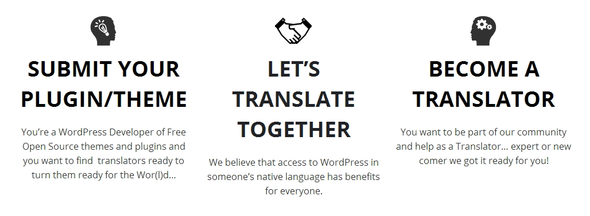

Internationalisation i18n
!important
Always follow i18n best practices
Making POTs
Localization – l10n
Tools
Managing Translations by Email
Emailing translation files
- Unable to track progress and changes
- No proofreading/validation by other translators
- No collaboration between translators
- Install extra software
- No shared translation database
Online Translation Management

- File names - Locale
- HTML tags
- Variables
- Spaces
- Track changes
- Google Translate
Update
- Transifex / WebTranslateIt
- Gist: Grunt l10n
- Poedit
- Localization - Plugin / Theme